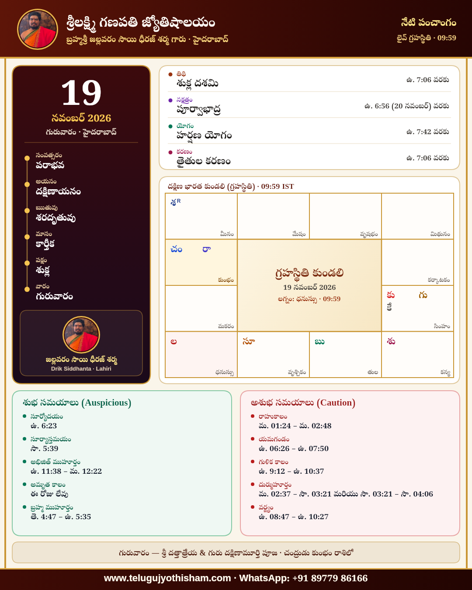

Facebook Page
1109 chars

🕉️ ఓం శ్రీలక్ష్మి గణపతయే నమః | శుభోదయం భక్తులారా!
📅 నేటి దృక్సిద్ధాంత పంచాంగం (19 నవంబర్ 2026, గురువారం)
🌙 తిథి: దశమి | ⭐ నక్షత్రం: పూర్వాభాద్ర
🌞 అభిజిత్ శుభ ముహూర్తం: ఉదయం 11:38 AM నుండి మధ్యాహ్నం 12:22 PM వరకు
✨ అమృత ఘడియలు: ఈ రోజు అమృత ఘడియలు లేవు
⚠️ రాహు కాలం: మధ్యాహ్నం 01:24 PM నుండి మధ్యాహ్నం 02:48 PM వరకు
🌟 నేటి శుభ యోగం ఉన్న రాశులు: ♈ మేషం • ♉ వృషభం • ♊ మిథునం
🔖 నేటి ముఖ్య విశేషాలు: నేటి తెలుగు పంచాంగం • అష్టమి తిథి & ధనిష్ఠ నక్షత్రం • నేటి రాశి ఫలాలు తెలుగులో • అభిజిత్ ముహూర్తం & రాహుకాలం
📖 నేటి సంపూర్ణ పంచాంగ విశ్లేషణ, వ్రత నియమాలు & 12 రాశుల ఫలితాలు చదవండి:
👉 https://www.telugujyothisham.com/daily-panchangam-vishesham-2026-11-17
📜 ఉచిత 100 పేజీల జన్మ కుండలి (Janma Kundali PDF): https://www.telugujyothisham.com/janma-kundali
🏛️ బ్రహ్మశ్రీ జల్లవరం సాయి ధీరజ్ శర్మ — శ్రీలక్ష్మి గణపతి జ్యోతిషాలయం
📞 వ్యక్తిగత జాతక & ముహూర్త సంప్రదింపు (WhatsApp): +91 89779 86166
#TeluguPanchangam #TeluguJyothisham #RasiPhalalu #VedicAstrology #ShubhaMuhurtham #KarthikaMasam #KarthikaSomavaram #VivahaMuhurtham #Rajayoga #TeluguJathakam #DailyPanchangam #Hyderabad #Telangana #AndhraPradesh
Instagram (4:5 Portrait)
954/2200 chars
🕉️ శుభోదయం! 19 నవంబర్ 2026, గురువారం — నేటి తెలుగు పంచాంగం 📌 (Save & Share)
🌙 తిథి: దశమి
⭐ నక్షత్రం: పూర్వాభాద్ర
🌞 అభిజిత్ ముహూర్తం: ఉదయం 11:38 AM నుండి మధ్యాహ్నం 12:22 PM వరకు
✨ అమృత ఘడియలు: ఈ రోజు అమృత ఘడియలు లేవు
⚠️ రాహుకాలం: మధ్యాహ్నం 01:24 PM నుండి మధ్యాహ్నం 02:48 PM వరకు
🌟 విశేష శుభ రాశులు: ♈ మేషం • ♉ వృషభం • ♊ మిథునం
📌 ముఖ్య అంశాలు: నేటి తెలుగు పంచాంగం | అష్టమి తిథి & ధనిష్ఠ నక్షత్రం | నేటి రాశి ఫలాలు తెలుగులో
📖 పూర్తి వ్యాసం & మీ ఉచిత 100-పేజీల జాతకం PDF కోసం బయో లింక్ లేదా telugujyothisham.com చూడండి:
🔗 https://www.telugujyothisham.com/daily-panchangam-vishesham-2026-11-17
📞 WhatsApp సంప్రదింపు: +91 89779 86166
#TeluguPanchangam #TeluguJyothisham #RasiPhalalu #VedicAstrology #ShubhaMuhurtham #KarthikaMasam #KarthikaSomavaram #VivahaMuhurtham #Rajayoga #TeluguJathakam #DailyPanchangam #Hyderabad #Telangana #AndhraPradesh #TeluguDevotional #SanatanaDharma #PanchangamToday #VedicWisdom #TeluguCulture #Tirupati #Vijayawada
LinkedIn
1102/3000 chars
Start 2026-11-19 with clarity: Today's Drik Siddhanta Panchangam highlights Dashami Tithi & Purvabhadra Nakshatra for strategic decisions.
🌞 Today's Key Astronomical & Muhurtham Timings (19 November 2026, Thursday (Guruvaram) IST):
• Tithi & Nakshatra: Dashami | Purvabhadra
• Abhijit Shubha Muhurtham (Peak Focus Window): Morning 11:38 AM to Afternoon 12:22 PM
• Rahukalam (Avoid New Commitments): Afternoon 01:24 PM to Afternoon 02:48 PM
• Strongest Transit Support: Aries, Taurus, Gemini
🔍 Key Vedic Topics in Today's Guide: Today Telugu Panchangam 2026-11-17 • Ashtami Tithi Dhanishtha Nakshatra • Daily Rashi Phalalu Telugu • Hyderabad Vedic Astrologer
📖 Read the full bilingual Telugu & English Drik Siddhanta guide:
https://www.telugujyothisham.com/daily-panchangam-vishesham-2026-11-17
✍️ Curated by Brahmasri Jallavaram Sai Dheeraj Sharma | Sri Lakshmi Ganapathi Jyothishalayam (Hyderabad)
🌐 Free 100-Page Janma Kundali & Panchangam: https://www.telugujyothisham.com
#VedicAstrology #TeluguPanchangam #DrikSiddhanta #IndianHeritage #MindfulLeadership #TeluguJyothisham #Hyderabad #NRI